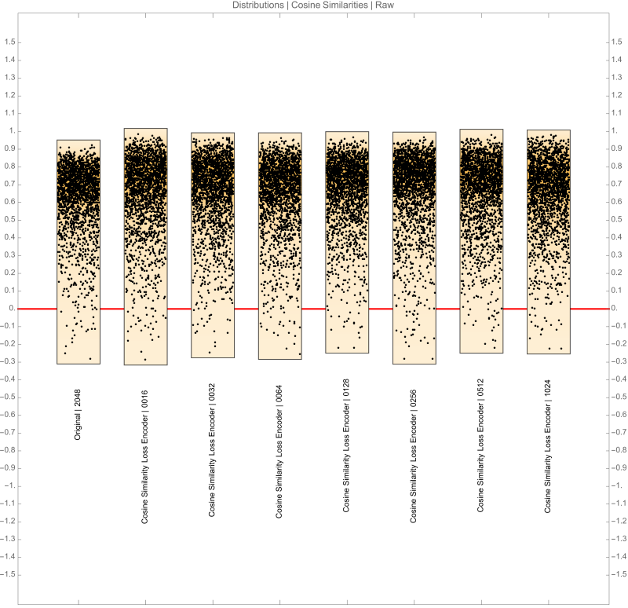
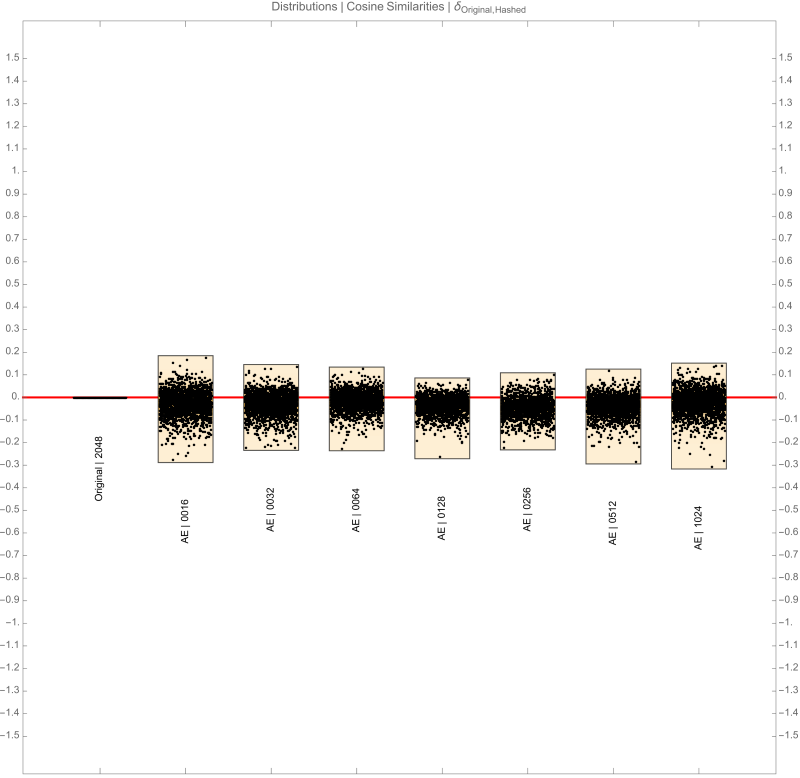
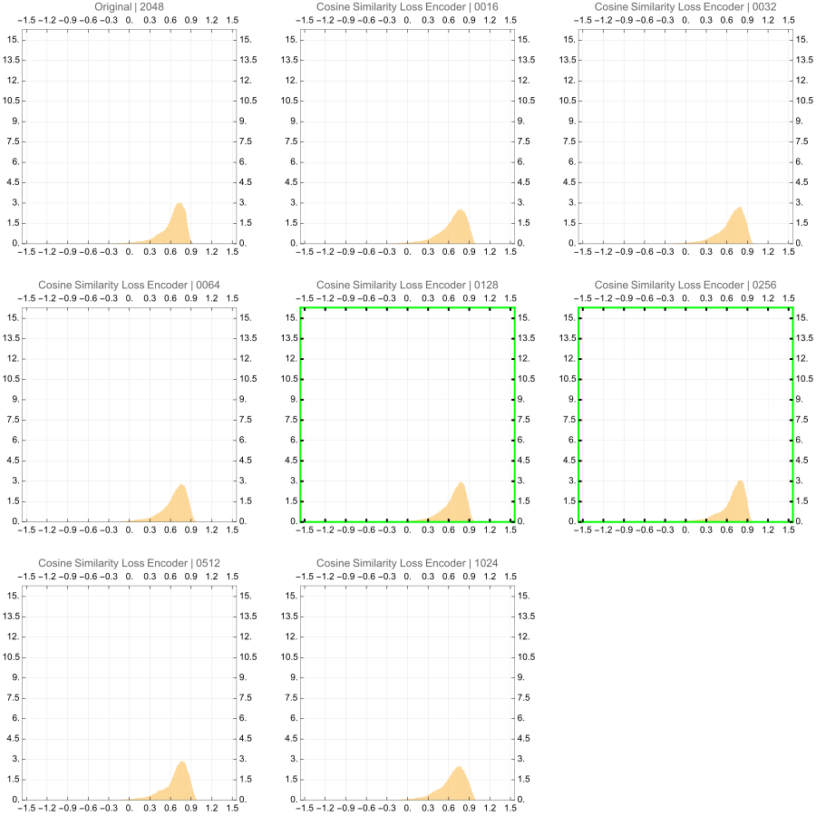
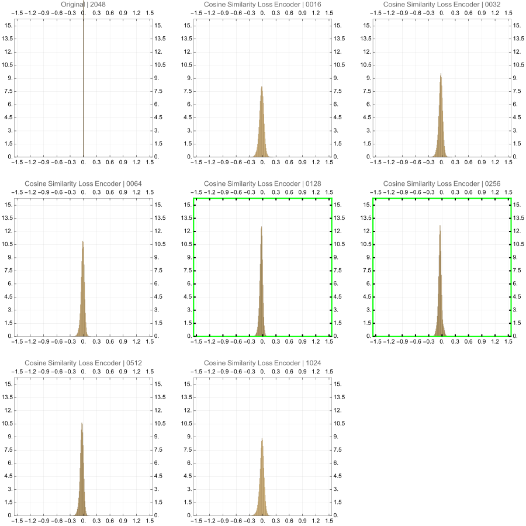
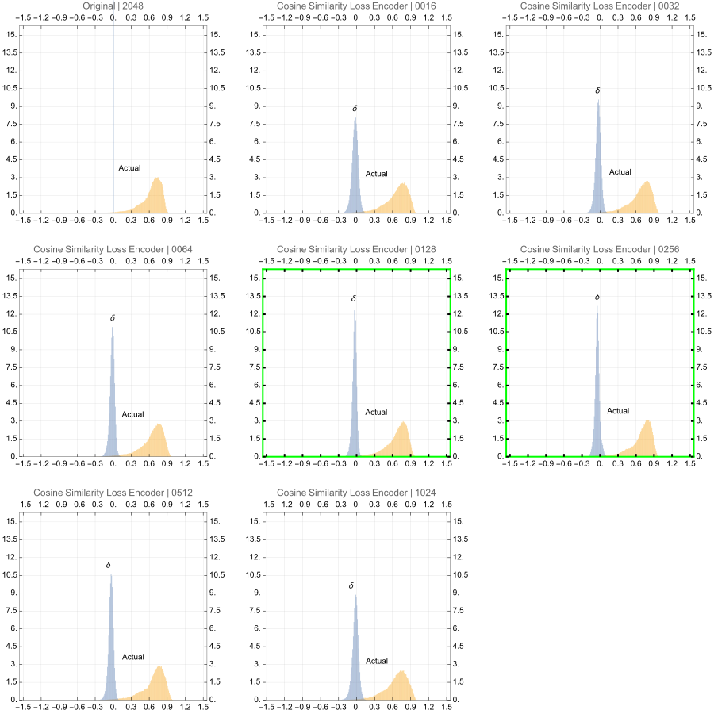

Scenario
Exploration
- In practice Autoencoders can be used to dimensionality reduction and they work by the following idea.
- Encoder block takes a high dimension vector and projects it to a lower dimension
- Decoder block takes the output of the Encoder and attempts to reconstruct the original vector
- After training, the encoder output can be used for compressing the high dimensional vectors.
- However, this exercise puts a slight twist on the and removes the decoder block altogether.
- Because of the objective is to get vectors that have the same relative similarity in the lower
dimensional space as the relative similarity of the corresponding vectors in the higher dimensions,
why not define the loss criterion the same way?
- Hence, we will define the loss criterion as \(MSE(a, b)\) where \[a =
batch\_cosine\_similarity\_matrix(high\_dimension)\] and \[b =
batch\_cosine\_similarity\_matrix(projected\_dimension)\]
- After training, the encoder output can be used for compressing the high dimensional vectors.
Sources
Same as the ones used in DimensionalityReduction.
Vectors are sourced from the model deepseek-coder-1.3b-base
model_name = "deepseek-ai/deepseek-coder-1.3b-base"
tokenizer = AutoTokenizer.from_pretrained(model_name)
model = AutoModelForCausalLM.from_pretrained(model_name)
print(f"DeepSeek-Coder model '{model_name}' and tokenizer loaded.")
Top 512 words of the english language have been encoded using the model above
How to reduce dimensions?
How to determine the best candidate?
- Calculate all combinations pairwise similarities for a subset of the vectors
- Pick a ballpark output dimension size
- Experiment with the available algorithms and various output dimensions
- Calculate the similarities in the lower dimensional space
- Subtract the corresponding similarities pairs of higher and lower dimensions
- Plot the distributions
- Pick the method with a distribution centered normally with a mean closest to 0 and with the least
variance
Keys
There are several abbreviations here and the guide below will help with the reading
- Original 2048 \(\rightarrow\) Raw vectors from the deepseek-coder-1.3b-base model
- Cosine Similarity Loss Encoder | 0016 \(\rightarrow\) Encoder with output dimensions of 0016
- Cosine Similarity Loss Encoder | 0032 \(\rightarrow\) Encoder with output dimensions of 0032
- Cosine Similarity Loss Encoder | 0064 \(\rightarrow\) Encoder with output dimensions of 0064
- Cosine Similarity Loss Encoder | 0128 \(\rightarrow\) Encoder with output dimensions of 0128
- Cosine Similarity Loss Encoder | 0256 \(\rightarrow\) Encoder with output dimensions of 0256
- Cosine Similarity Loss Encoder | 0512 \(\rightarrow\) Encoder with output dimensions of 0512
- Cosine Similarity Loss Encoder | 1024 \(\rightarrow\) Encoder with output dimensions of 1024
Observations
From the distributions below, we can observe the following in the similarity space.
- Since all of the encoders are presented with the same type of loss (cosine similarity loss), the
histograms of the projected vectors look very similar to the histogram of raw data.
- There is little difference between the histogram profiles.
- So the next decision-making aspect would be the size of the vector that is practical for the use case
Victors?
- Since the histogram profiles are similar we can use either
- Cosine Similarity Loss Encoder | 0128
- Cosine Similarity Loss Encoder | 0256
Distribution Charts


1. Base Distributions in Cosine Similarity Space

2. Difference distributions in Cosine Similarity Space
These are obtained by subtracting pairwise cosine similarities between the original and reduced
dimensions. For example, a given data point would be \(a_{2048} - a_{E\ 0064}\) where \(a_{2048}\) is the
cosine similarity between a pair of words and \(a_{E\ 0064}\) is the cosine similarity between the exact
same words but with the vectors obtained from the encoder having an encoder output dimensions of 64.
Each distribution is made up of nearly 130,000 datapoints.

3. Base and Difference distributions in Cosine Similarity Space
Both the above in the same plot :)
